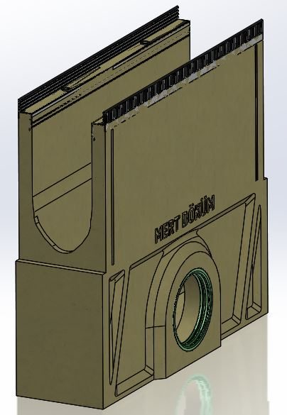
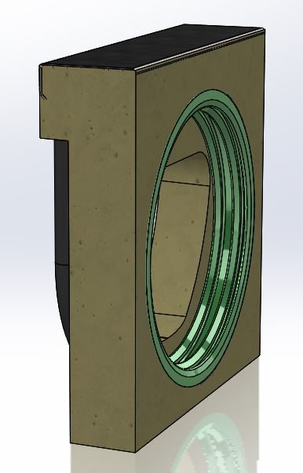
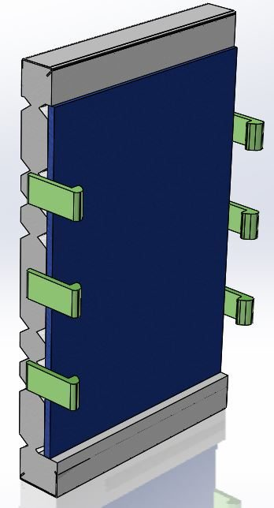
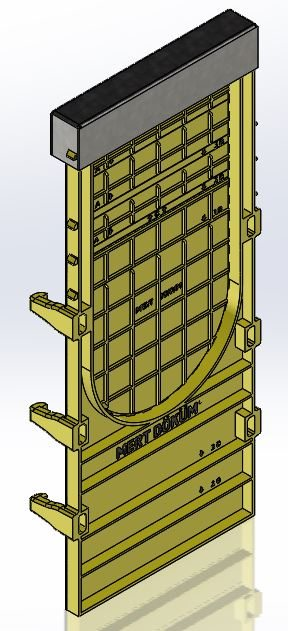
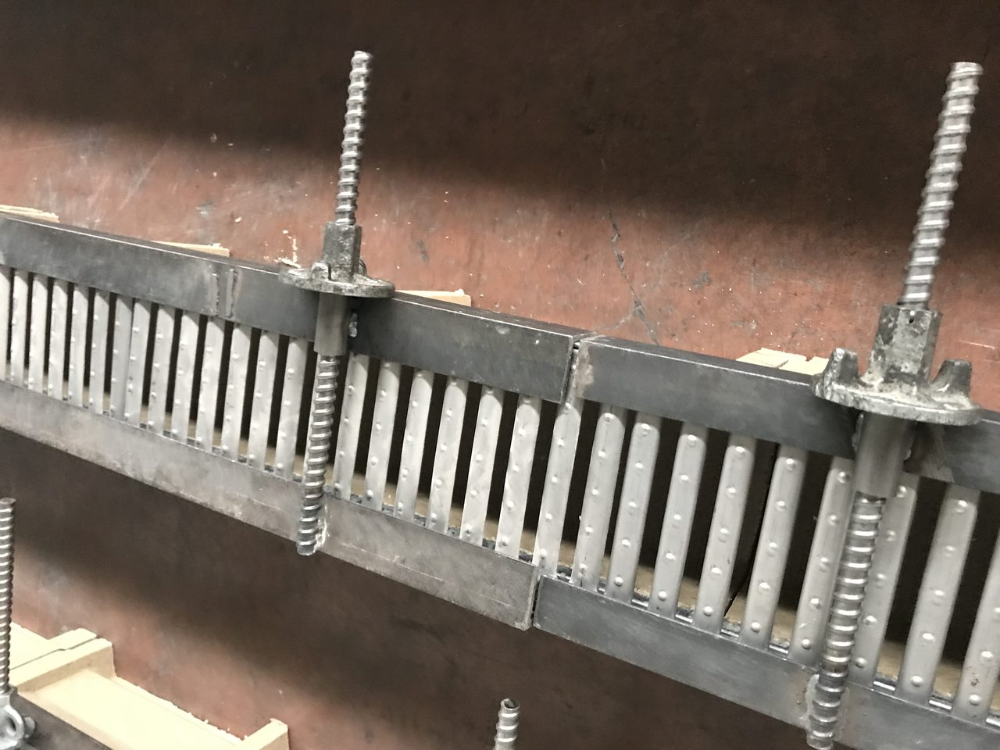
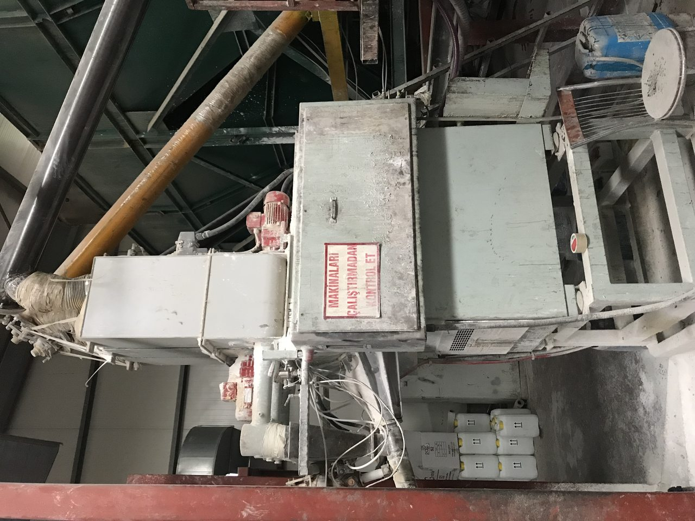
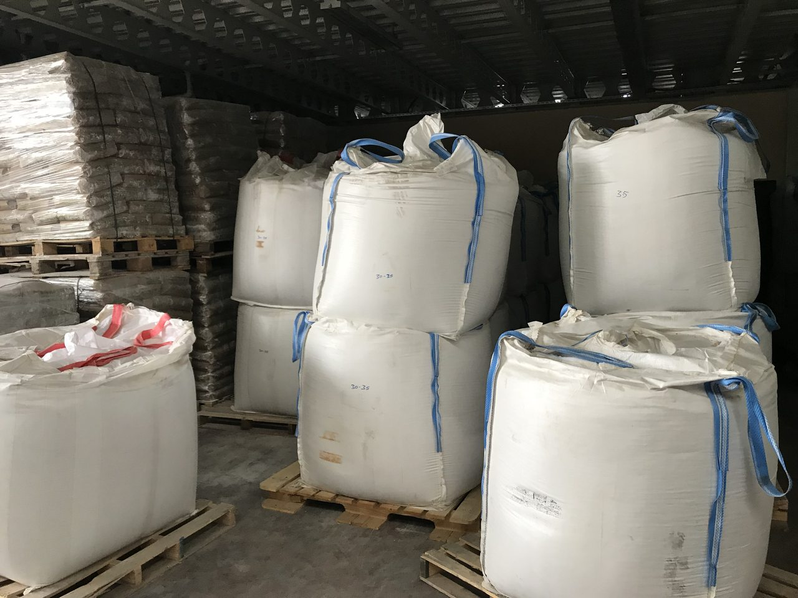
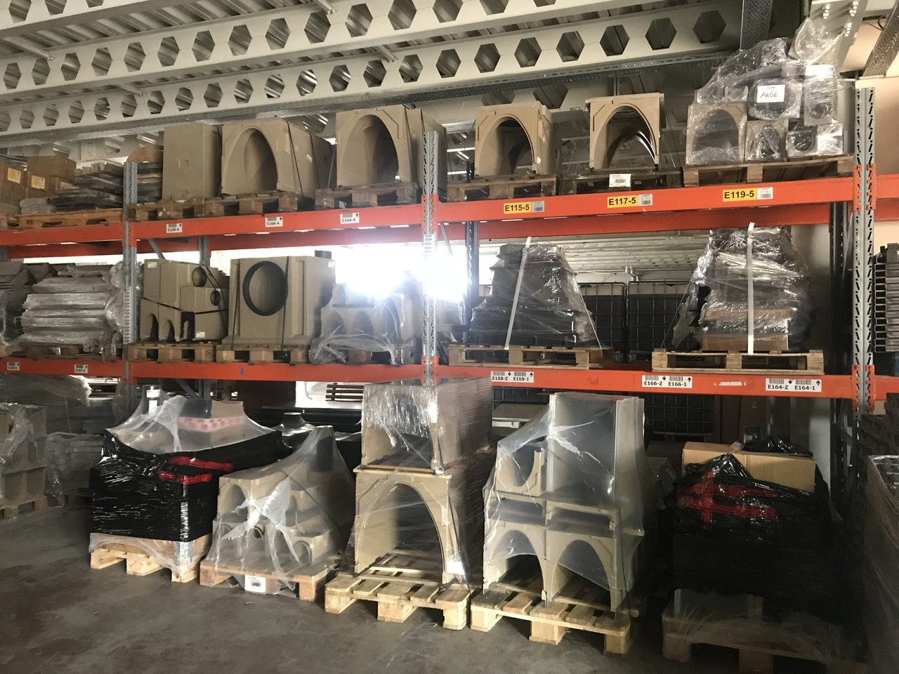

Yönetici Özeti & Varsayımlar
Polimer beton drenaj kanalı yüksek marjlı, hafif, korozyonsuz bir üründür. Yalın bir hat (~3.000 ton/yıl) ~1,4 milyon € (72 M₺) yatırımla kurulur; döviz-bazlı modelde NBD +121 M₺, İVO %39,5, geri ödeme ~3,1 yıl. Reçinenin reçetede yalnızca %12,3 olması ve oda-sıcaklığı (fırınsız) kür, maliyet avantajının temelidir.
Sinerji notu. HIGHLINE polimer kanal, döküm ızgara (ALAN CAST) ile aynı sistemin iki yarısıdır (kanal gövdesi + üstüne oturan ızgara). İkisini birlikte üretmek, ACO/MEA/ULMA gibi komple sistem sunabilen tek yerli oyuncu konumu verir.
Ürün Yelpazesi
Eksiksiz EN 1433 sistemi: 4 genişlik serisi, 17 yükseklik kademesi, tam aksesuar ailesi + döküm/paslanmaz ızgara seçenekleri.
| Seri | Genişlik | Yükseklik (mm) | Düz kanal | Aksesuarlar |
|---|---|---|---|---|
| V100 | 100 mm | H150 / 175 / 200 / 250 | L1000 | dört çıkış, müdahale kutusu, kapak (MFC), boru çıkış, yön değiştirme, ek |
| V150 | 150 mm | H210 / 235 / 260 / 310 | L1000 | aynı aile |
| V200 | 200 mm | H265 / 290 / 315 / 365 | L1000 | aynı aile |
| V300 | 300 mm | H385 / 410 / 435 / 460 / 485 | L1000 | aynı aile + contalı |
Izgaralar: Döküm (sfero CI — V100–V300 + LIGHT), döküm köşebend (çerçeve), paslanmaz (4 tip + FUGA gizli slot); L250/L500. Yük sınıfı ızgara tipiyle belirlenir (EN 1433 A15–F900). Cıvata: V100 M6, V150/V200 M8, V300 M10 + perçin.
6 kalıp avantajı. Mert Döküm karşılaştırması: aynı ürün ailesini ACO 15–16 kalıpla üretirken HIGHLINE 6 kalıpla üretiyor → daha az kod, daha az işçilik, daha az stok, hızlı adaptasyon ve daha düşük kalıp CAPEX'i. Montaj süresi ~70 dk.
Pazar ve Talep
Polimer beton drenaj kanalı, büyüyen ve ithal-ağırlıklı bir pazar; ihracat ve altyapı talebiyle döviz-bazlı.
- Pazar büyüklüğü: Global polimer beton drenaj kanalı 1,42 milyar $ (2024) → 2,42 milyar $ (2033), CAGR %6,1; Avrupa 320 mn $. Geniş trench-drain (tüm malzemeler) ~2,1 milyar $.
- Türkiye: Kamuya açık ayrı veri yok; inşaat/altyapı proxy ile ~10–20 mn €/yıl tahmini. 2025 Kamu Yatırım Programı 46,2 milyar $, deprem sonrası ~100 milyar $ kentsel dönüşüm itici güç.
- Talep segmentleri: altyapı/karayolu (D400), havalimanı (F900), AVM/otopark (D400), sanayi/lojistik (E600, kimyasal direnç), peyzaj (A15–B125), veri merkezleri (yükselen).
- Avantaj (döküm demir/betona göre): hafif (V100 1m ~18 kg), korozyonsuz, düşük su emme (<%0,3, donma direnci), pürüzsüz iç yüzey (yüksek debi, sediman tutmaz), düşük bakım.
EN 1433 Yük Sınıfları
| Sınıf | Test yükü | Kullanım |
|---|---|---|
| A15 | 1,5 t | yaya, peyzaj, bahçe |
| B125 | 12,5 t | hafif araç, ev girişi |
| C250 | 25 t | kaldırım kenarı, oto yıkama |
| D400 | 40 t | anayol, otopark, AVM |
| E600 | 60 t | sanayi, lojistik, kargo |
| F900 | 90 t | havalimanı apron, liman |
Rakipler: küresel — ACO (lider), Hauraton, ULMA, MEA, Zurn; yerli — Asil Döküm, Urban Döküm, Kent Teknik Kimya, Albayrak, ASF, Asya, Desa. ACO Türkiye'de aktif (Multiline/Seal-in).
Reçete & Teknik
Polimer beton = ~%72 silis kum + doymamış polyester reçine + kalsit dolgu + kobalt/MEKP (su yok). Reçete bu işin asıl fikri mülkiyetidir; akredite laboratuvarda doğrulanmıştır.
Üretim formülü (E6): Silis/kuvars kumu (0,3–0,7mm %33,3 + 1–3mm %16,63 + 3–5mm %16,63) + Polimer Reçine E6 %12,3 + Kalsit %20,4 + Kobalt %0,2 + MEKP (max) %0,7. Reçinenin %12,3 ile patent aralığının (%10–35) alt/verimli ucunda olması maliyet avantajıdır (reçine en pahalı bileşen). Tedarikçiler: Siltaş (kum), Özer/Erco (reçine), Aydın Madencilik (kalsit).
Mekanik Dayanım (akredite, TS EN 1433)
Üretim Hattı & Kür Avantajı
Hat: Respecta tipi sürekli gravimetrik dozaj + mikser + döküm → çelik kalıplara baskı → oda sıcaklığında ekzotermik kür (kobalt+MEKP; su/fırın yok) → otomatik kutulama/paletleme (LINEA tipi pnömatik manipülatör + konveyör) → çemberleme. Fırın gerekmemesi enerji maliyetini gelirin ~%1–3'üne indirir (Portland beton prekastında %5–10). Hızlı kalıp devri, 6 kalıpla yüksek devir sağlar.
Yapısal doğrulama (dürüst not). Döküm ızgaranın EN 124/1433 yük testi (600 kN × 5 + 900 kN, E600 seviyesi) için SolidWorks nonlineer FEA yapıldı; analizler tam yükte yakınsamadı (plastik göçme/limit nokta) — yüksek yük sınıfı (E600+) ızgara tasarımı yatırım öncesi gözden geçirilmeli/doğrulanmalı. Polimer kanal gövdesi A15–D400 bandında sorunsuz.
Yatırım (CAPEX)
Yalın tek hat; ekipman ağırlıklı (kiralık bina varsayımı). Toplam yatırım ihtiyacı ~1,4 M € (72 M₺).
| Kalem | € | ₺ (×53,3) |
|---|---|---|
| Respecta tipi mikser/dozaj + döküm ünitesi | 450.000 | 24,0 M |
| Kalıp seti (6 profil, kademeli) | 250.000 | 13,3 M |
| Otomatik kutulama/paletleme + konveyör | 200.000 | 10,7 M |
| Laboratuvar + bina tadilatı | 100.000 | 5,3 M |
| Silo / SCADA / forklift | 80.000 | 4,3 M |
| Yardımcı (yıkama / vakum / çemberleme) | 70.000 | 3,7 M |
| Sabit yatırım ara toplam | 1.150.000 | 61,3 M |
| İşletme sermayesi | 250.000 | 13,3 M |
| TOPLAM YATIRIM | 1.400.000 | 74,6 M |
Anahtar makineler (Respecta/Autocaster, otomatik hat) teklif-bazlı satılır; değerler 2026 referans + mühendislik tahminidir, RFQ ile netleşir. Kalıp seti kademeli alınabilir (kapasiteyi belirleyen darboğaz).
Hammadde & Birim Ekonomi
1 kg polimer beton hammadde maliyeti ~15,0 TL (0,28 €); reçine kalemin yarısından fazlası. 1,20 €/kg satışta brüt hammadde marjı yüksek.
En büyük girdi ve risk reçine (UPR) fiyatıdır (maliyetin %52'si, dünya ~1,6–2,0 €/kg). Reçineyi modelde ayrı kalem tutmak ve tedarik sözleşmesi/stok yönetimi kritik. Silis kum hacimce baskın ama maliyetçe sadece %13.
Finansal Analiz
10 yıllık döviz-bazlı (proje/unlevered) nakit akışı. Satış 1,20 €/kg, değişken maliyet gelirin %52'si, tam kapasitede sabit gider 280.000 €/yıl, kapasite rampası Yıl2 %50 → Yıl4+ %90.
| Yıl | Kap. | Üretim (t) | Gelir (€) | FAVOK (€) | Net Kâr (€) |
|---|---|---|---|---|---|
| 1 | %0 | 0 | 0 | −84.000 | −194.000 |
| 2 | %50 | 1.500 | 1.800.000 | 668.000 | 419.000 |
| 3 | %75 | 2.250 | 2.700.000 | 1.058.000 | 711.000 |
| 4 | %90 | 2.700 | 3.240.000 | 1.275.000 | 874.000 |
| 5–10 | %90 | 2.700 | 3.240.000 | 1.275.000 | 874.000 |
Tam kapasitede (Yıl 4+): Gelir 172,7 M₺, FAVOK 68 M₺ (marj %39), net kâr ~46,6 M₺/yıl.
Duyarlılık
Model en çok reçine fiyatına ve satış fiyatına duyarlı; her uçta da getiri güçlü kalıyor.
| Değişken | Senaryo | NBD (₺) | İVO |
|---|---|---|---|
| Değişken maliyet (reçine) | düşük (%46) | 149,8 M | %44,0 |
| baz (%52) | 121,0 M | %39,5 | |
| yüksek (%60) | 82,6 M | %33,0 | |
| Satış fiyatı | −15% (1,02 €/kg) | 86,4 M | %33,6 |
| baz (1,20 €/kg) | 121,0 M | %39,5 | |
| +15% (1,38 €/kg) | 155,5 M | %44,9 |
Rekabet & Konumlandırma
Konumlandırma: maliyet liderliği + yalın gam (6 kalıp) ve sertifikalı yerli + komple sistem (kanal + ızgara).
| Oyuncu | Menşe | Güç | Zayıf |
|---|---|---|---|
| ACO | DE · lider | Modüler platform, şartname ağı, marka | 15–16 kalıp, yüksek fiyat, uzun termin |
| Hauraton | DE | Endüstrinin kurucusu, lif takviyeli/PP | Pahalı, ithalat |
| ULMA | ES | Yüksek performans, EPD | Pahalı, ithalat |
| MEA | DE | Yüksek yük sınıfı, sanayi | Pahalı, ithalat |
| Yerli (Asil, Urban, Kent…) | TR | Fiyat, yakınlık | Gam/sertifika/tasarım sınırlı |
| HIGHLINE | TR | 6 kalıp (maliyet lideri) + sertifikalı + komple sistem (kanal+ızgara) + EUR-fiyat | Yeni marka; E600+ ızgara doğrulama |
ÜSTÜNLÜKLER
- 6 kalıp = düşük kod/işçilik/stok
- Reçine-verimli reçete (%12,3), fırınsız kür
- Komple sistem (kanal + döküm/paslanmaz ızgara)
- Yüksek brüt marj, EUR ihracat geliri
FIRSATLAR
- Altyapı + kentsel dönüşüm + veri merkezi talebi
- İthal ürüne yerli/hızlı alternatif
- AB/MENA ihracatı (EN 1433 + CE)
ZAYIFLIKLAR
- Yeni marka/referans
- E600+ ızgara yapısal doğrulama
- Reçine fiyatına bağımlılık
TEHDİTLER
- Reçine (UPR) fiyat oynaklığı
- Premium markaların şartname gücü
- Düşük kapasite kullanımı riski
Risk & Teşvik
- Reçine (UPR) fiyatı: en büyük risk (maliyetin %52'si); %10 artış brüt marjı ~2–3 puan düşürür → tedarik sözleşmesi, stok, alternatif tedarikçi (Erco/Biyester).
- Kapasite kullanımı: <%60 ise FAVOK negatife döner → ihale/ihracat satış kanalı önceliği.
- Çevre/ÇED: polimer beton düşük emisyonlu (su/fırın yok) — döküme göre çok daha hafif ÇED yükü; yine de reçine/MEKP/peroksit depolama + yangın güvenliği ve emisyon izni gerekir.
- Teşvik: metal/plastik dışı imalat — 6. bölge OSB'de KDV/gümrük muafiyeti + vergi indirimi + SGK desteği; yatırıma başlamadan teşvik belgesi alınmalı (bkz. ALAN CAST §11 teşvik tablosu).
Sonuç ve Öneri
Yatırım kararı: Güçlü pozitif. ~1,4 M € yatırım, %15 iskonto altında NBD 121 M₺, İVO %39,5, geri ödeme ~3,1 yıl. Polimer betonun yüksek marjı + reçine-verimli reçete + fırınsız kür + 6 kalıp avantajı, döküm ızgaraya göre daha kârlı bir iş ortaya koyuyor.
- Faz-1: Yalın tek hat (Respecta mikser + 6 kalıp + otomatik kutulama), V100–V300 + döküm ızgara; ihracat (1,20 €/kg) odaklı.
- Sinerji: Döküm ızgara (ALAN CAST) ile birleştirip komple sistem sat — ACO/MEA/ULMA'ya karşı tek yerli komple çözüm.
- Doğrulama: Respecta/Autocaster + kalıp için taze RFQ; E600+ ızgara FEA'sını yeniden çöz; reçine tedarik sözleşmesi.
- Belgelendirme: TS EN 1433 + CE (ihracat şartı), KIWA/TSE; 6. bölge OSB teşvik belgesi.
▸ Ürün & Tesis Görselleri (tıkla aç — büyütmek için resme tıkla)







